一、介绍
全文搜索属于非常常见的需求，开源的elasticsearch是目前全文搜索引擎的首选，它可以快速存储、搜索和分析海量数据，其底层为开源库luence搜索引擎，用户无法直接使用，es对其进行封装，并以restful api的格式将接口提供给使用者。wiki将其描述为一个分布式、支持多租户的全文搜索引擎；
默认的elasticsearch是没有可视化界面的，kibana通常用作es的可视化面板和提供可视化交互功能，方便使用者对es的管理。
es和kibana通常被应用于elk日志管理的解决方中，其中e指elasticsearch，负责数据检索、分析，k指kibana，用于es日志/交互的可视化，剩下的l代指logstash，用于日志收集和解析及传输，这三个框架在实际业务场景中，如日志管理/分析业务中通常被用做一种通用的解决方案；
logstash本身的性能负载相对较高，在一些对性能要求较高的业务环境中可以把logstash换成更轻量的filebeat，形成另一套解决方案efk。
二、使用
0x01 架构
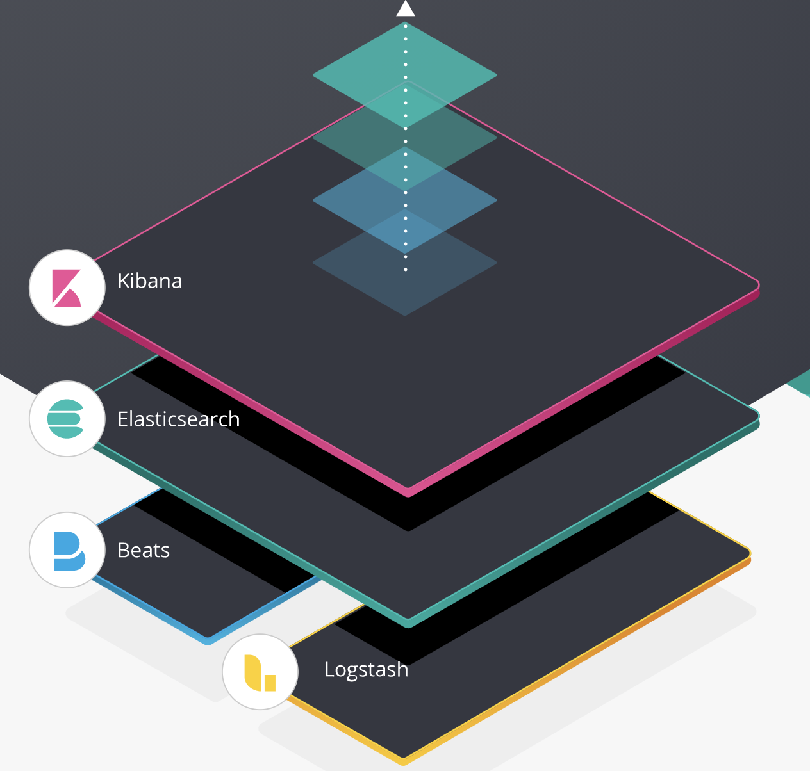
0x02 数据类型
es中主要有三种类型，即index（索引）、type（类型）、document（文档），索引可以理解成传统关系型数据中的库，用于存储文档，类型类似数据库中表的概念，用于描述文档的类型，而文档可以理解成具体的一条数据。
查看当前节点的所有索引：
curl -X GET 'http://localhost:9200/_cat/indices?v'查看每个index的所有type：
curl 'localhost:9200/_mapping?pretty=true'0x03 操作
这块主要记录下es的常用api在kibana下的可视化使用。
index操作
index创建
1、dev-tools控制台操作，请求体中可指定mapping配置：
PUT /test { "settings": { ... any settings ... }, "mappings": { "type_one": { ... any mappings ... }, "type_two": { ... any mappings ... }, ... } }2、创建文档时自动创建索引
POST /aaa/bbb/1 { "name": "test" }index查看
GET /testindex删除
DELETE /test多个index删除
DELETE /index_one,index_two DELETE /index_*所有index删除
DELETE /_all DELETE /*
文档搜索
index mapping查看
GET /aaa/_mapping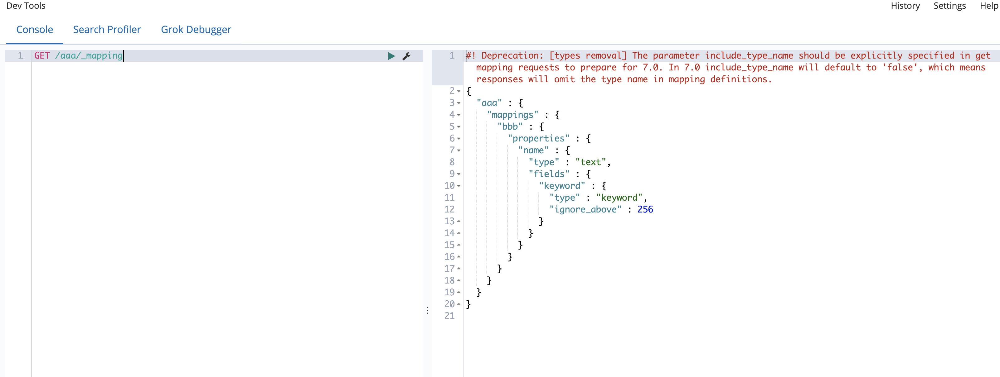
查找index下所有文档
GET /_search { "query": { "match_all": {} } }GET /att_ck/goods/_search { "query": { "match_all": {} } }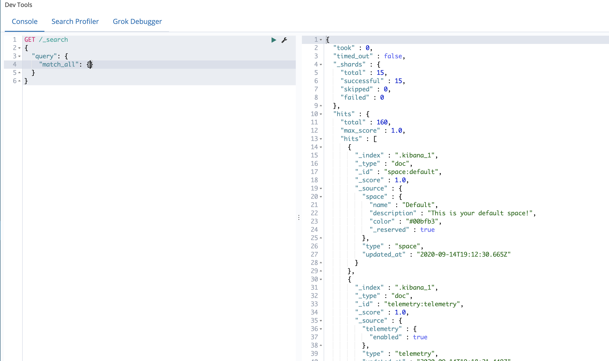
单字段匹配查询
GET /aaa/bbb/_search { "query": { "match": { "name": "test" } } }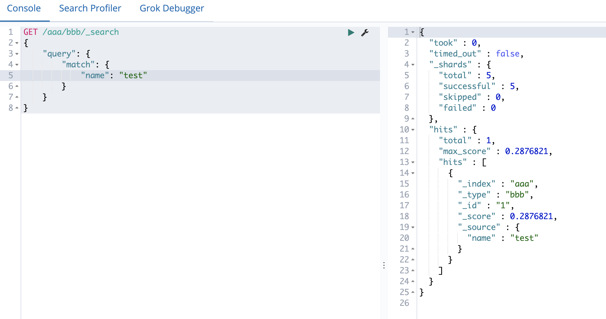
单字段正则查询
GET /aaa/bbb/_search { "query": { "regexp":{ "name": "test.*" } } }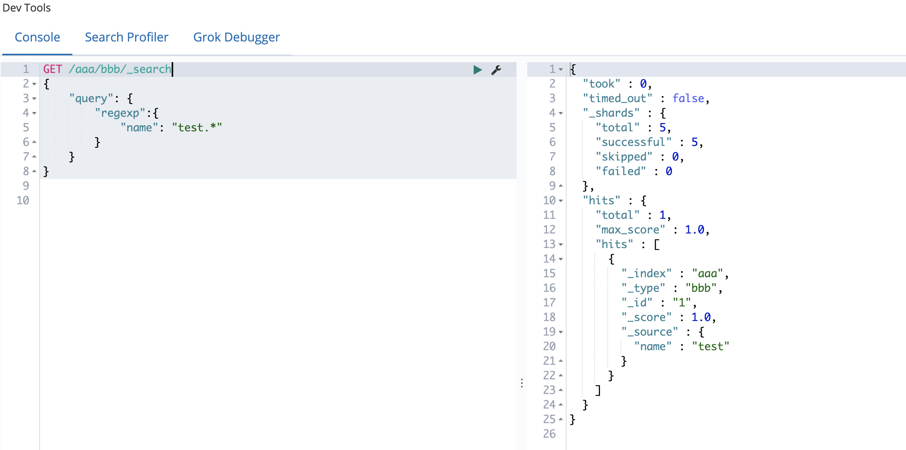
需要注意的es的正则和常规的正则引擎语法不太相同，es相对来说支持的功能更少，不太灵活，而且经测试在es上做正则是有性能影响的；同时需要注意的是设置了分词的type用regex匹配时是会出问题的，需要在创建index时关闭分词。
常用正则字符：
特殊保留字符（使用需转义）：
. ? + * | { } [ ] ( ) " \匹配任意单个字符（.）：
abcdeab... # 匹配 a.c.e # 匹配匹配一个或多个（+）：
aaabba+b+ # 匹配 aa+bb+ # 匹配 a+.+ # 匹配 aa+bbb+ # 匹配匹配0个或多个（*）：
aaabbba*b* # 匹配 a*b*c* # 匹配 .*bbb.* # 匹配 aaa*bbb* # 匹配匹配0个或1个（？）：
aaabbbaaa?bbb? # 匹配 aaaa?bbbb? # 匹配 .....?.? # 匹配 aa?bb? # 不匹配匹配次数范围指定({})：
aaabbba{3}b{3} # 匹配 a{2,4}b{2,4} # 匹配 a{2,}b{2,} # 匹配 .{3}.{3} # 匹配 a{4}b{4} # 不匹配 a{4,6}b{4,6} # 不匹配 a{4,}b{4,} # 不匹配分组（()）：
ababab(ab)+ # 匹配 ab(ab)+ # 匹配 (..)+ # 匹配 (...)+ # 不匹配 (ab)* # 匹配 abab(ab)? # 匹配 ab(ab)? # 不匹配 (ab){3} # 匹配 (ab){1,2} # 不匹配或（｜）：
aabbaabb|bbaa # 匹配 aacc|bb # 不匹配 aa(cc|bb) # 匹配 a+|b+ # 不匹配 a+b+|b+a+ # 匹配 a+(b|c)+ # 匹配
组合字段查询
GET /aaa/_search { "query": { "bool":{ "must":[ { "match": { "name":"test" } }, { "term":{ "_type":"bbb" } } ] } } }GET /aaa/_search { "query": { "bool":{ "should":[ { "match": { "name":"test" } }, { "term":{ "_type":"bbb" } } ] } } }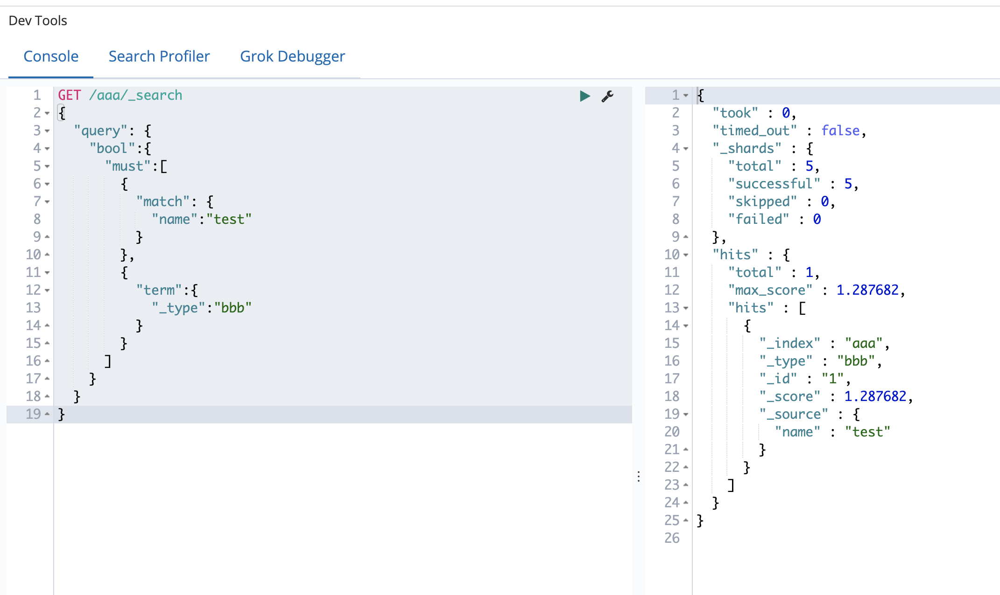
多字段组合查询，should==or，must==and
文档创建
POST /aaa/bbb/1
{
"name": "test"
}这种创建方式如果已经存在相同id的文档，将会造成覆盖
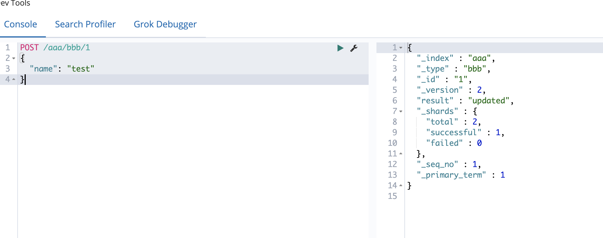
POST /aaa/bbb/1?op_type=create
{
"name": "test"
}POST /aaa/bbb/1/_create
{
"name": "test"
}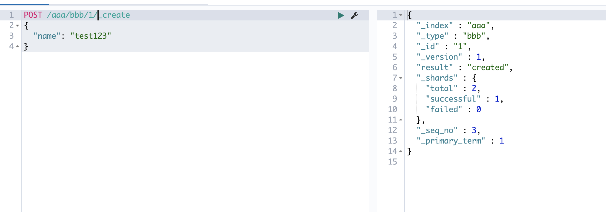
上面两种方式就不会覆盖，若有index、type、id一致的文档，则引擎抛出异常
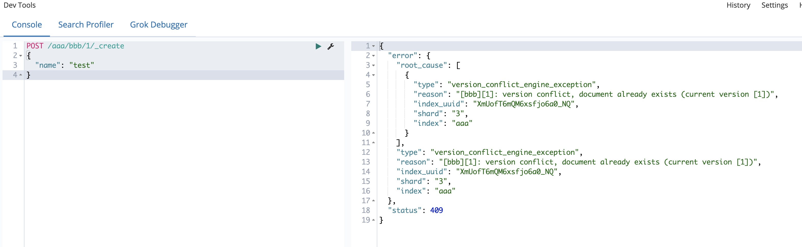
文档删除
DELETE /aaa/bbb/1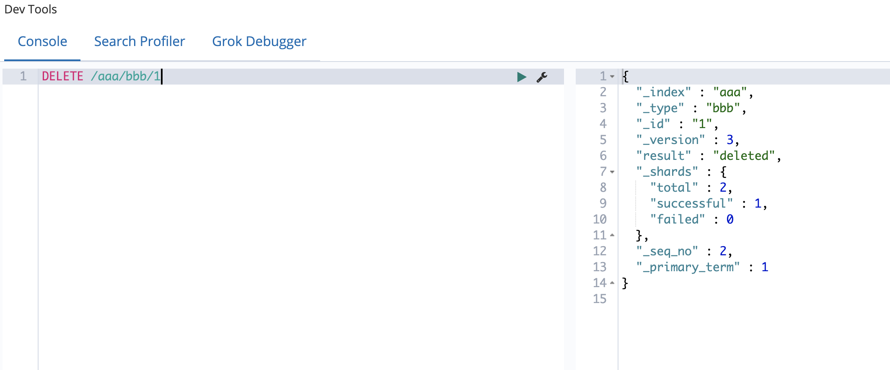
分词设置
一般在创建索引的时候可以自定义mapping的设置，指定映射的各个字段类型，想要不分词，在定义字段时选定字段类型为keyword；另外映射类型可以动态更新，但更新一个已经存在的映射可能会导致索引中的数据出错造成业务的不稳定。
更新映射：
PUT /aaa/_mapping/bbb
{
"properties" : {
"tag" : {
"type" : "keyword"
}
}
}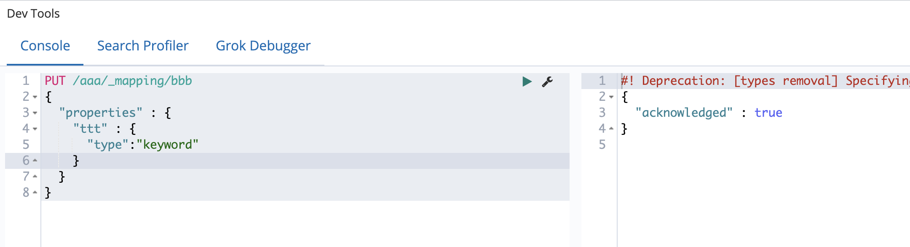
测试映射：
GET /aaa/_analyze
{
"field": "ttt",
"text": "Black-cats"
}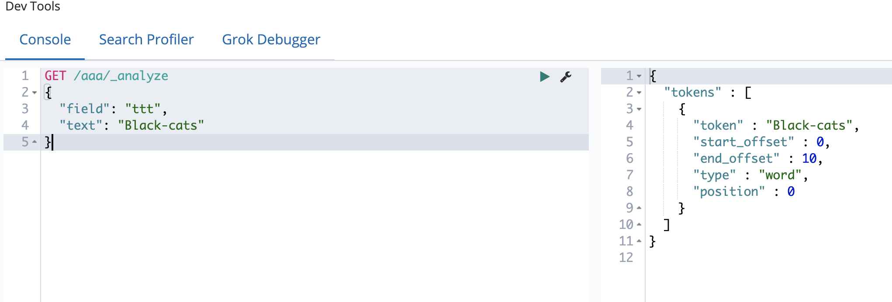
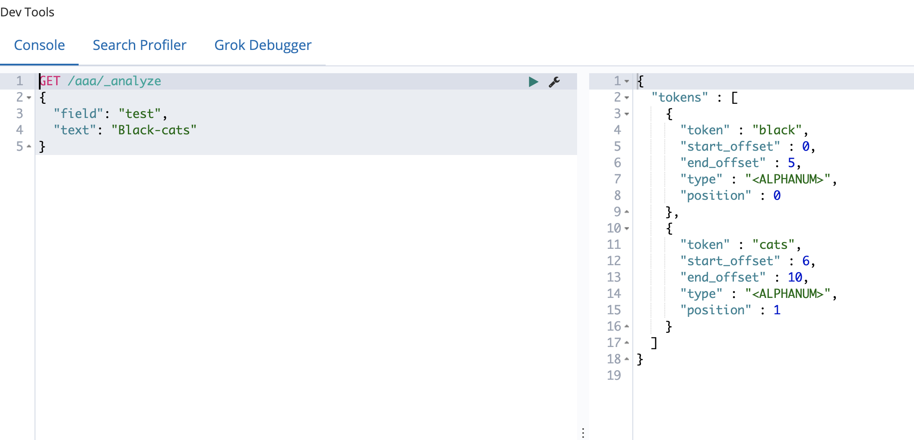
三、总结
由于业务需要现学了es和kibana并在此做下简单记录，目前只在使用上有所熟练，对于其它更深层次的业务场景有所了解但目前未有机会接触，期待后续对这块解决方案底层、架构等的更进一步的深入。
PS（2020/09/27）:
从研发dalao处了解到es经常在电商等领域作为缓存存储部分重要字段作为索引供应用层进行查询，流程大体如下：
服务/业务生成的数据分别存入hadoop和es中，其中选择部分重要字段存入es中作为索引，全量数据入hadoop，应用层根据输入从es中快速取出索引，然后去hadoop中取数据返回给应用。直接从hadoop做查询会较慢，es在查询速度上是有优势的，但是es本身及基于es的第三方框架貌似对大数据的计算并不太友好，如果要写模型做理线分析计算这种，可能还是需要hadoop和其它大数据计算平台去做的。
四、参考&引用
https://juejin.im/post/6844903661722664973
http://doc.codingdict.com/elasticsearch/265/
https://www.letianbiji.com/elasticsearch/es7-add-update-doc.html
https://4hou.win/wordpress/?p=32586